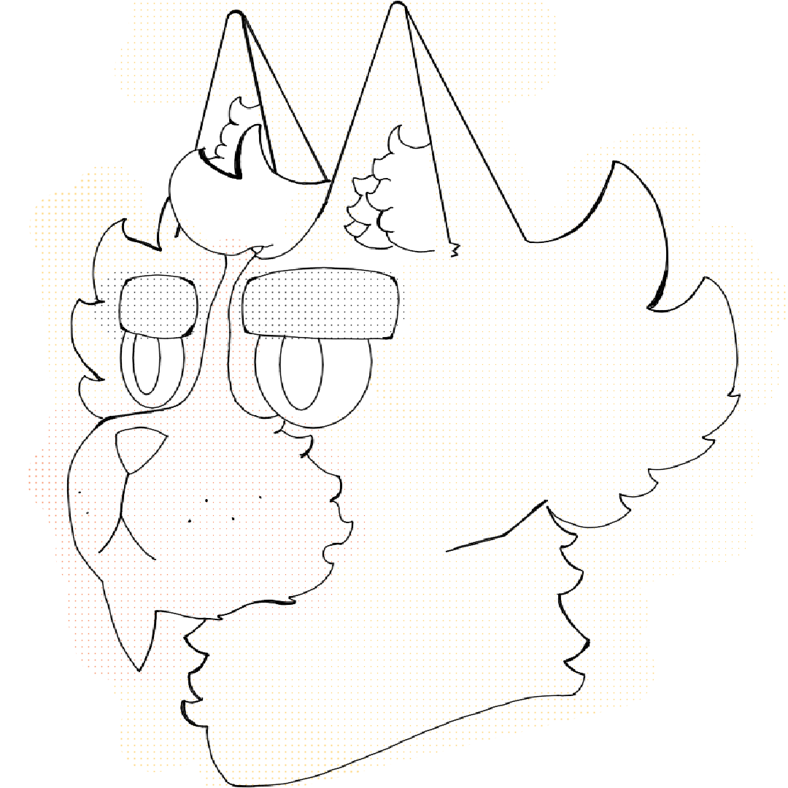
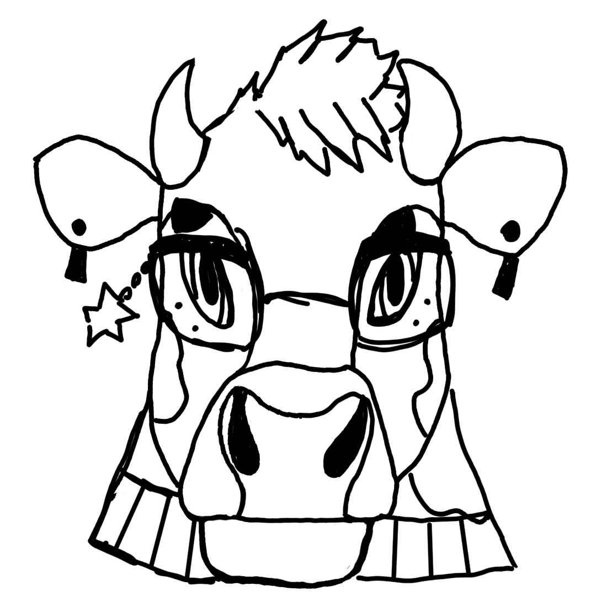
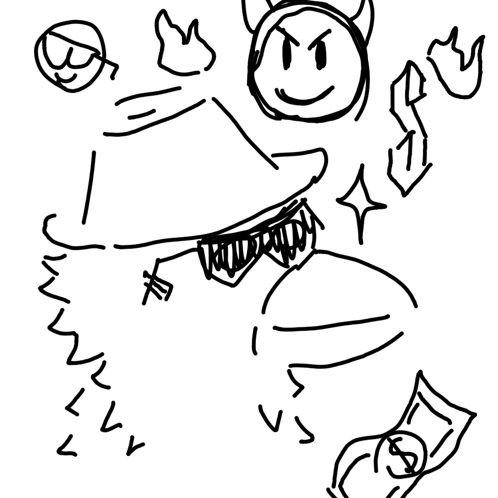
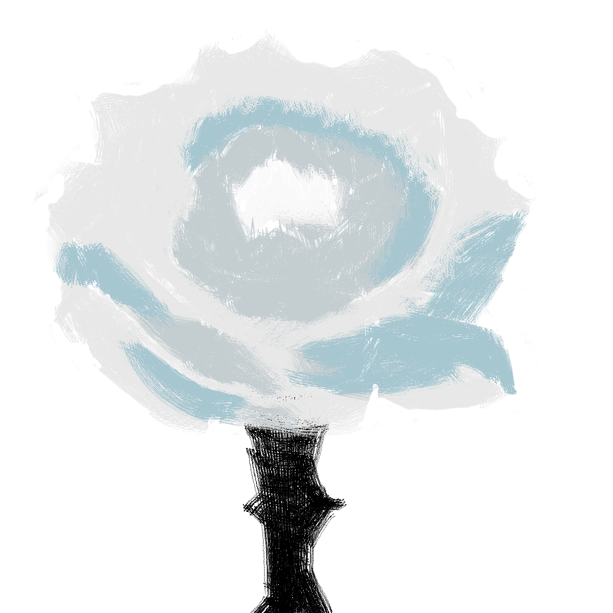
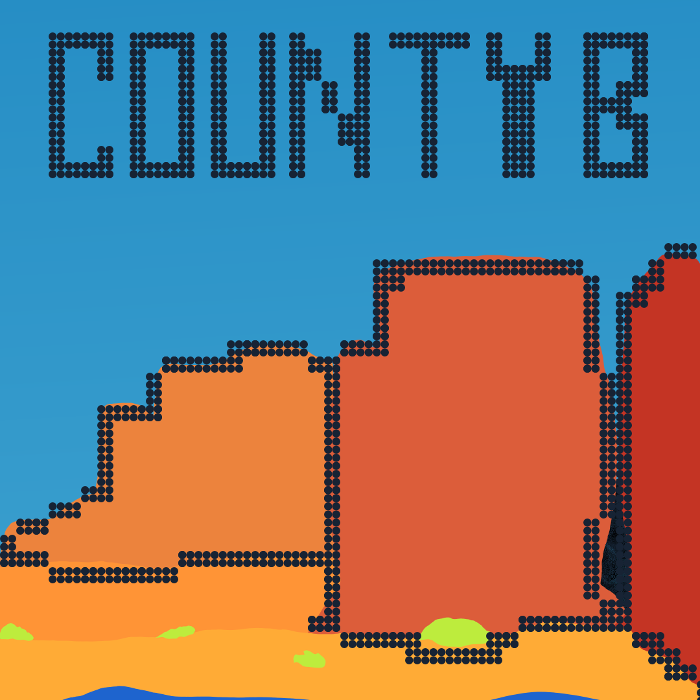
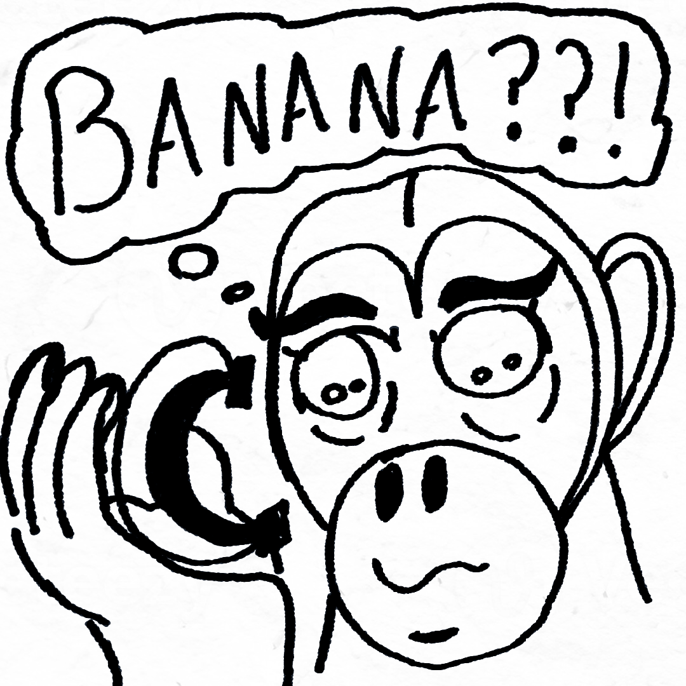
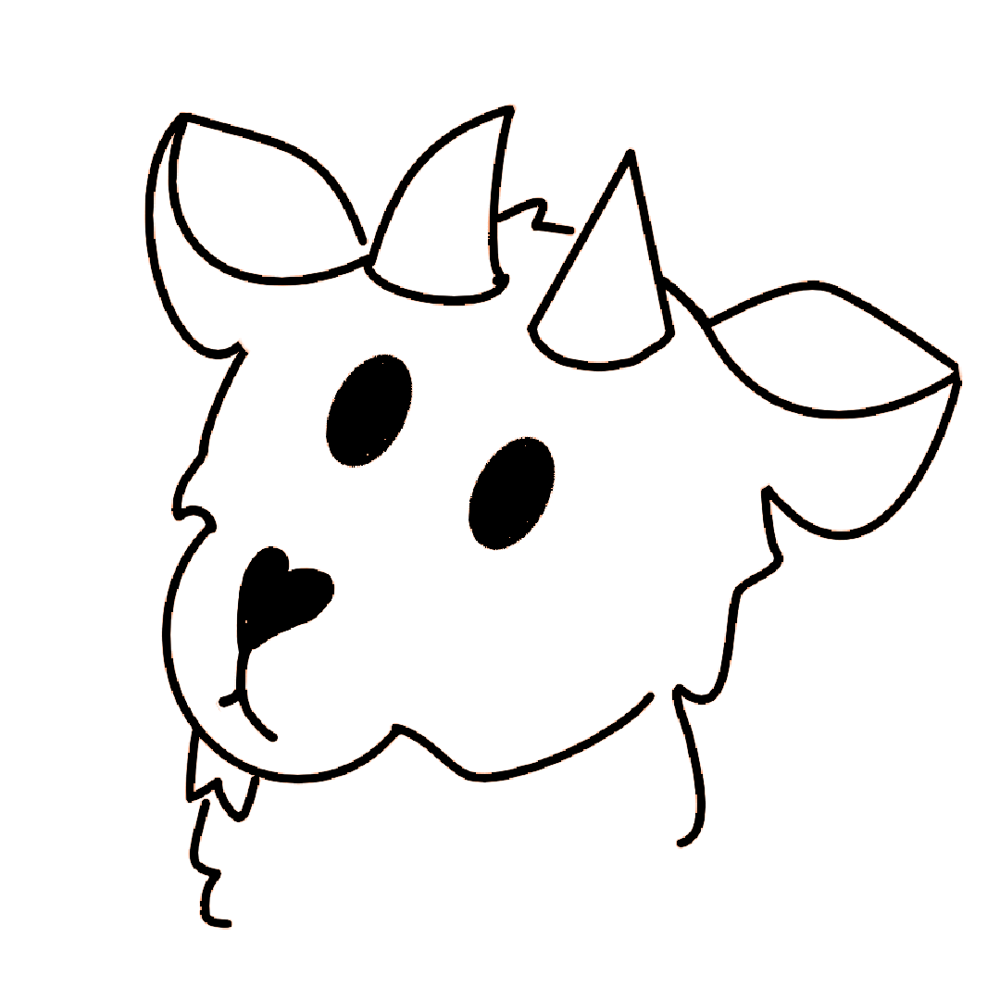
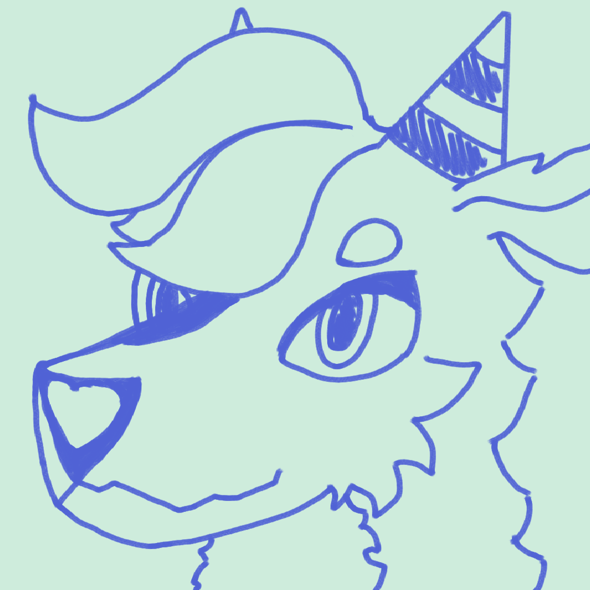

Father Cherish
The founder of the chappel the rest is mystery

He's a Meine Coon cat Student made from a lab experiment many years ago, he loves plants and the outsides overall although hes more of a chill type or well reserved character that holds quite the skill with all sorts of machinery appart of that cattow is quite fond of strategy. amoung his favourite things we have tea leaves, small plastic objects, trinkets, cozy sweaters, few people. cattow often is percived as a child although he very much hates the idea, sometimes he yearns of going back to simpler times although he really doesnt remember them often times even questioning if he is associated in any degree to his relatives Cattow wears a green sweater with one red stripe, a pair boxing gloves when figthing, a pair of black shorts and green boots, also people see him carring an old golden pocket watch wich he doesnteven remember where did he even get it from.

Shes a North Devon Cow chief officer whom recently got transfered to cat city due to an ongoing case regarding the CEO of pharma co tm and the spread of a new drug prettymuch like adrenalin marketed as a sort of protein. shes a very serious and tempered critter with a lot of energy on the noon when she seeks crimminals that may want to plot something nasty also gets very protective and demanding with their people due to a past accident that took her wife. Bully isnt taken very seriously at times given how new shes on the gig but that never stopped her to take a lot of time to investigate and set real order in the office when needed, she knows what role fits best for each of the station squad and when to set them to take action. she takes cattow as another one of her kids and often tries to help him find clues and maybe piece a bit more in relation with his past or to help Crow giving him adulting and dating advice. When shes not at work bull loves to take some time at the local pub and drink some beers and even play the armonica or sing or going to the local boxing ring to wrestle and take some steam off.

Hes a Carrion Crow whom escaped from the royal crown and the weigth of being part of it to become the greatest detective ever, but as his blood is looking for him he decides to refuge in cattows house after giving a generous sum to the owner of the house to cover the rent. Hes is quite a party animal going party after party trying to get the most of conecctions and rumors, not very caring of his looks and more relaxed person so relaxed one could even say careless to the point his room is filled with bottles of beer and energy drinks to one dismay, but he is always getting the job done that what everyone can garantee always playing dumb yet he migth be the most cunning always getting something out of you. if he is not in his gig hes always out there taking walks or taking part time jobs yet you will always see him playing dj on the evenings. He would rather live this life than life under the palace rules and even wonder if defing such so he can finally be free.

Shes cattows mother, former scientist and contemporean doctor she works almost everyday at the hospital as the boss of the department although that doesnt take her time to check on their kids and give them chores to do around shes very anxious and demanding yet often times the sweetest ever her temperament is quite short but her understanding of the surroundings is quite impressive shes always on the move switching task and trying to do the most of each day when shes not at work she goes jogging around the city if not shes playing the guitar and singing to old rock songs.

Hes cattow Father, a Grey Wolf buissness man, active investor and pharmasist hes always looking for ideas that would produce a big sum of income or just make his life easier big enthuasist on the department of big mechas and advanced tech although hes not quite fond of it hes is also a fan of old empires like the rome or the japanize one, nowdays he heads every wednesdays to the local hospital looking to get the attention of his ex wife celine whom divorced long time ago, if hes not there hes in his department or the job. hes a fairly fit person although it was rumored that he was more slimer time ago.

Shes a European mole quite fond of humid dark places and all the ores of the subterrean city under Cat city where she resides and often traverses to also quite fond of epic fantasy tales that she even cosplays as epic knigths and princesses and all related she often fears how the outside may be and how the people may react to her precense or to her disguisses so she only wonder and ever hopes to gain the courage to get out, She wishes to meet new people to share her interest and possibly write her own stories also shes a very dedicated historian and archiologist always looking for pieces of the past to redescover and determine.

The twelfth disiple and adoptive son of Bull-e hes quite a scarilidy critter that often times doesnt like being aproached whom gives missions to cattow to get to points of interest, golliat is often inspired by cattows bravery but not enough to stand for himself and show off because of the fathers word which is still unknown by cattows knoledge he often tries to display such courage through lucha libre although when fater needs him he will give him the exeption by the word of the gods.

The founder of the chappel the rest is mystery
An ether dragon whom landed on cat city museum not so long ago, shes always cool even if people piss her off, always ready to blast off and take action loves taking trips around everywhere she goes and tends to get lost in particular merch around the land lets say a bit of a collectionist she has quite a distant relation to her people due to their nature of always traversing and conquering every people they give a good glance at wich she is against at but ever wonder what does it really feel to be in company with people she is fond of. amoung her favourite food she loves energy drinks, rare ores specially uranium and burgers. shes Cattows best friend and always takes some time to chat with him when shes not around.
